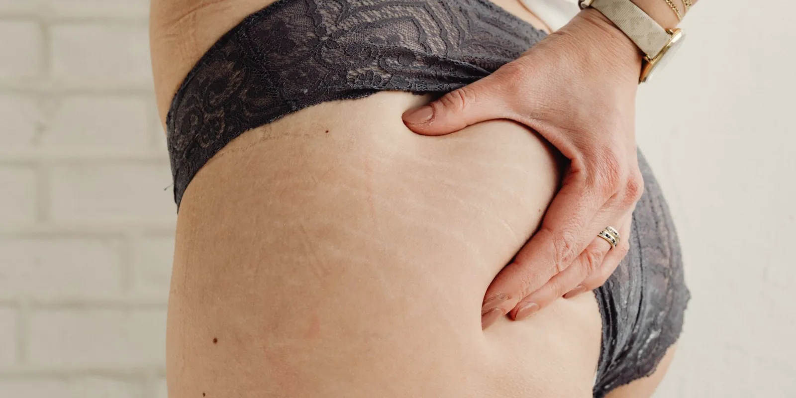

Piernas hinchadas antes de la menstruación: por qué pasa cada mes
Cada mes, unos días antes del periodo, sientes que los zapatos aprietan más y las piernas pesan distinto. Es uno de los síntomas premenstruales más comunes, y tiene una explicación hormonal bastante clara.

Las piernas hinchadas antes de la menstruación tienen que ver, casi siempre, con los cambios hormonales de la segunda mitad del ciclo, no con que estés haciendo algo mal. En Medellín, donde buena parte del día se pasa de pie, subiendo lomas o sentada muchas horas en una oficina, esa hinchazón hormonal se nota todavía más en las piernas que en otras partes del cuerpo.
¿Por qué hay piernas hinchadas antes de la menstruación?
La explicación más estudiada es hormonal. Después de la ovulación, en la fase lútea (la segunda mitad del ciclo), primero sube la progesterona y, pocos días antes del periodo, caen tanto la progesterona como el estrógeno. Ese vaivén interactúa con el sistema que regula cuánta sal y cuánta agua retiene el cuerpo, el sistema renina-angiotensina-aldosterona, y el resultado práctico es que durante unos días se retiene algo más de líquido.
A esto también se le llama retención de líquidos premenstrual o, de forma más general, edema premenstrual.
Ese líquido no se queda solo en el abdomen, que es donde más se nota la hinchazón premenstrual clásica. Por efecto de la gravedad, buena parte baja también a las piernas y los tobillos, sobre todo si pasas muchas horas de pie o sentada. Fuentes clínicas sobre el síndrome premenstrual describen esta hinchazón como uno de los síntomas físicos más frecuentes, junto con la sensibilidad en los senos, y coinciden en que suele mejorar cuando empieza el sangrado.
Por qué a veces se nota más en las piernas que en el resto del cuerpo
Hay un segundo factor, menos conocido y todavía en estudio, que podría ayudar a explicar por qué a algunas mujeres esta hinchazón cíclica en las piernas les afecta más que a otras: en algunos estudios pequeños se ha observado que, en la fase lútea, las venas de la pierna pueden volverse algo más distensibles, es decir, dilatarse un poco más de lo habitual, posiblemente por efecto de la progesterona. No es un hallazgo que se repita igual en todas las investigaciones, así que por ahora es más una hipótesis en estudio que un hecho establecido. Aun así, en mujeres que ya tienen alguna predisposición venosa (várices en la familia, piernas que pesan el resto del mes, trabajo de muchas horas de pie), esa posible dilatación extra podría sumarse a la retención de líquido y hacer que la hinchazón se sienta más.
Si te preocupa esa pesadez de fondo, en insuficiencia venosa crónica: síntomas que no debes ignorar explicamos qué otras señales vigilar. Y si lo que te llama la atención es que las venas cambian en distintas etapas hormonales de tu vida, no solo en el ciclo, puedes leer también várices y menopausia: qué cambia en esta etapa.
Un estudio con ecografía doppler en mujeres premenopáusicas con hinchazón, pesadez o molestia en ambas piernas antes del periodo encontró que los síntomas se concentraban en la fase final del ciclo y mejoraban al iniciar el sangrado. Es, precisamente, el patrón que ayuda a diferenciar esta hinchazón de otras causas.
Edema cíclico idiopático: cuando la retención es más intensa
Existe además un cuadro llamado edema cíclico idiopático, en el que la retención de líquido es más marcada y afecta sobre todo a mujeres en edad reproductiva. Se le llama "idiopático" porque no tiene una causa única identificada; los cambios hormonales del ciclo se consideran parte del mecanismo, pero no lo explican por completo. Se diagnostica descartando antes otras causas de hinchazón, no al revés.
No toda hinchazón premenstrual llega a ese punto.
Qué puede ayudar en esos días, en Medellín y en cualquier parte
- Moverte: caminar, subir escalas o simplemente no quedarte horas seguidas de pie o sentada activa el retorno venoso.
- Bajar un poco la sal en esos días, sin eliminarla del todo.
- Hidratarte bien. Suena contradictorio, pero beber poca agua puede empeorar la retención, no mejorarla.
- Elevar las piernas un rato al llegar a casa, por encima del nivel del corazón si puedes.
- Usar medias de compresión si ya las tienes recomendadas, sobre todo si el día es largo o caluroso.
Nada de esto "cura" la hinchazón hormonal, porque no hay nada que curar: es parte de un ciclo normal. Pero en muchos casos estas medidas ayudan a que se note menos.
En Seravena no recomendamos quedarte solo con la palabra "hormonal" si la hinchazón te preocupa de verdad. Vale la pena diferenciarla de un problema venoso de fondo antes de restarle importancia, sobre todo si además sientes las piernas pesadas el resto del mes.
Cuándo la hinchazón en las piernas no es solo hormonal
La hinchazón premenstrual típica tiene un patrón reconocible: aparece en ambas piernas, es de intensidad leve a moderada y mejora en los primeros días del sangrado. Cuando algo de eso cambia, hay que prestar atención.
Hay señales que no corresponden a un ciclo normal: que la hinchazón sea solo en una pierna, que venga con dolor al tacto, calor local o la piel enrojecida, que no mejore cuando llega el periodo, o que cada mes sea más intensa que la anterior. Ahí ya no hablamos de retención hormonal sino de algo que debe revisar un especialista, por ejemplo con el apoyo de un tratamiento de várices en Medellín que empiece por una valoración con eco doppler.
Tampoco toda hinchazón que preocupa es grave: la mayoría de las veces, en mujeres jóvenes sin otros síntomas, sí es hormonal. Pero "la mayoría de las veces" no es lo mismo que "siempre", y esa diferencia es la que toca aclarar con una valoración, no adivinarla en casa. Si además te hinchas fuera de estos días del mes, ese patrón merece una revisión aparte, como explicamos en piernas hinchadas al final del día: cuándo es normal y cuándo consultar.
Antes de tu próxima consulta, o si nunca has hablado de esto con nadie, anota durante dos ciclos si la hinchazón es igual en ambas piernas, si mejora al elevar los pies por la noche y si desaparece en los primeros días de sangrado. Esos tres datos son justo lo que un médico necesita para diferenciar un patrón hormonal de otro que merezca mirar más a fondo. Si quieres partir de ahí, puedes agendar una valoración y llevar esas notas contigo.
Preguntas frecuentes
¿Es normal que las piernas se hinchen antes del periodo?
Sí, en la mayoría de los casos es normal. La retención de líquidos antes de la menstruación es uno de los síntomas premenstruales más frecuentes y suele mejorar en los primeros días del sangrado. Si además notas pesadez en las piernas el resto del mes, vale la pena comentarlo en una valoración.
¿Cuánto dura la hinchazón premenstrual en las piernas?
Suele aparecer unos días antes del periodo, dentro de la fase lútea del ciclo, y tiende a bajar cuando empieza el sangrado. Si se extiende varios días después de que termina el periodo, conviene revisarlo con un médico.
¿Qué puedo hacer para que se note menos la hinchazón en las piernas antes de la regla?
Moverte, reducir el exceso de sal, hidratarte bien, elevar las piernas al llegar a casa y usar medias de compresión si ya las tienes recomendadas puede ayudar en muchos casos. Ninguna medida elimina la retención hormonal, pero sí puede hacer que la sientas menos.
¿Cuándo la hinchazón en las piernas antes de la regla no es solo hormonal?
Cuando la hinchazón es solo en una pierna, viene con dolor al tacto, calor local o la piel enrojecida, o no mejora cuando llega el periodo. En esos casos conviene una valoración pronta para descartar otra causa.